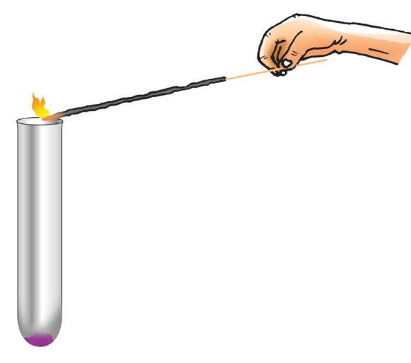
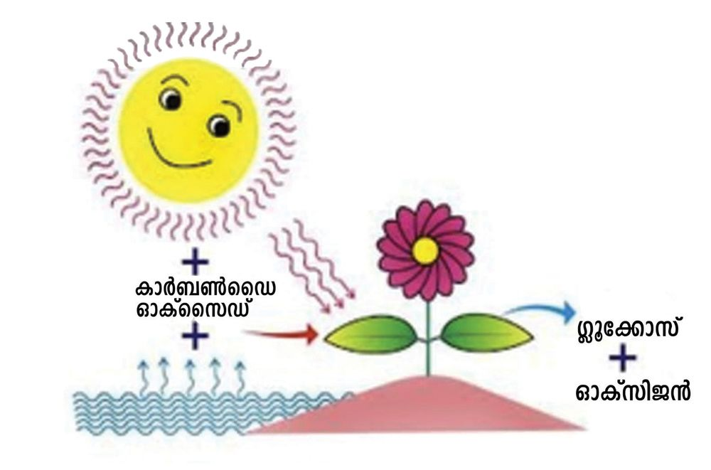
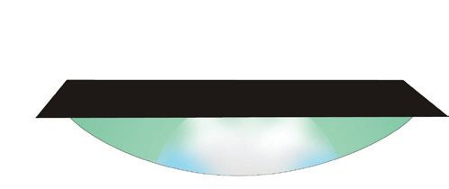
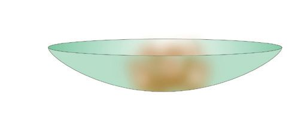
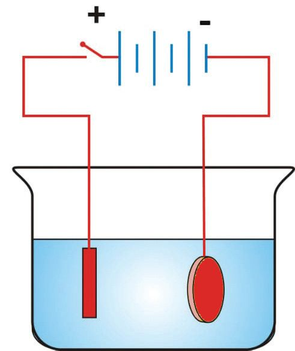
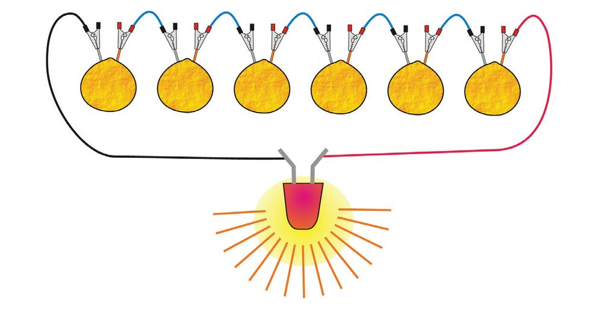

ചിത്രം നിരീക്ഷിക്കൂ.
എന്തെല്ലാമാണ് ചിത്രത്തിൽ കാണുന്നത്?
y മെഴുകുതിരി കത്തുന്നു
y ആഹാരം പാകം ചെയ്യുന്നു
y
ഇവിടെ പദാർഥങ്ങൾ പലതരം മാറ്റങ്ങൾക്ക് വിധേയമാകുന്നതായി കാണുന്നില്ലേ?
കല്ല് കൊൊത്തി ശിൽപമാക്കുന്നതും വാഴക്കുല പഴുക്കുന്നതും ഒരുപോോലെയുള്ള
മാറ്റങ്ങളാണോോ? ഒന്ന് മനുഷ്യയനിർമിതവും മറ്റേത് പ്രകൃതിദത്തവും അല്ലേ? ചുറ്റുംം
നോോക്കിയാൽ ഇത്തരം പലതരം മാറ്റങ്ങൾ നിരീക്ഷിക്കാനാവുമല്ലോോ?
ഇത്തരം മാറ്റങ്ങൾ ചിലപ്പോോൾ പുതിയ പദാർഥങ്ങളുണ്ടാകാനും കാരണമാകും.
നമ്മുടെ ചുറ്റുപാടുംം കാണുന്നതും പലവിധമായ മാറ്റങ്ങൾക്ക് വി
ധേയമാകുന്നതുമായ ഈ പദാർഥങ്ങളെല്ലാം ദ്രവ്യയത്തിന്റെ വിവിധ
രൂപങ്ങളാണെന്നറിയാമല്ലോോ?
പ്രപഞ്ചത്തിലെ എല്ലാ പദാർഥങ്ങളുംം ദ്രവ്യയത്താൽ (matter) നിർ
മിതമാണ്.
ദ്രവ്യയത്തിന്റെ സവിശേഷതകൾ മനസിലാക്കിയ ശേഷം നമുക്ക്
പദാർത്ഥങ്ങൾക്കുണ്ടാകുന്ന മാറ്റങ്ങളുടെ രസതന്ത്രം ചർച്ച ചെയ്യാം.
ദ്രവ്യയത്തിന്റെ പൊൊതുസവിശേഷതകൾ എന്തെല്ലാമാണ് ?
ഓരോോന്നായി പരിശോോധിക്കാം.
ചെറിയ കല്ല്
വലിയ കല്ല്
ചിത്രം 4.2
ചിത്രം 4.3
52
ജലനിരപ്പ് അടയാളപ്പെടുത്തിയ ഒരു ബീക്കറിലേക്ക് ഒരു കല്ല്
നൂലിൽ കെട്ടി താഴ്ത്തുക. ജലനിരപ്പിന് എന്ത് മാറ്റമുണ്ടാകുന്നു?
ജലനിരപ്പ് ഉയരാൻ കാരണം എന്തായിരിക്കും?
കുറച്ചുകൂടി വലിയ കല്ലാണ് ബീക്കറിലേക്ക് താഴ്ത്തുന്നതെങ്കി
ലോോ? ജലനിരപ്പിൽ എന്ത് വ്യയത്യാസമാണുണ്ടാവുക?
സ്ഥിതി ചെയ്യാൻ സ്ഥലം ആവശ്യയമാണ് എന്നതാണ് ദ്രവ്യയത്തിന്റെ
ഒരു സവിശേഷത. ദ്രവ്യയത്തിന് സ്ഥിതിചെയ്യാൻ ആവശ്യയമായ
സ്ഥലത്തെ അതിന്റെ വ്യാാപ്തം (volume) എന്ന് പറയുന്നു.
ഈ രണ്ട് കല്ലുകളെയും ഒരു ത്രാസിലിട്ട് തൂക്കി നോോക്കൂ. എന്ത്
വ്യയത്യാസമാണ് കാണുന്നത്?
ദ്രവ്യയത്തിന് മാസ് ഉണ്ട്. ഇത് ദ്രവ്യയത്തിന്റെ മറ്റൊൊരു സവിശേഷത
യാണ്.
ഒരു പദാർഥത്തിൽ അടങ്ങിയിട്ടുള്ള ദ്രവ്യയത്തിന്റെ അളവാണ്
അതിന്റെ മാസ്.
വായു ഒരു ദ്രവ്യയമാണോോ?
വായുവിന് സ്ഥിതി ചെയ്യാൻ സ്ഥലം ആവശ്യയമാണോോ?
ചിത്രത്തിലേതുപോോലെ ഒരു ഗ്ലാസിനുള്ളിൽ ഒരു ടവൽ ഉറപ്പിച്ച്
വച്ച ശേഷം ഗ്ലാസ് തലകീഴായി പിടിച്ച് ബീക്കറിലെ ജലത്തി
ലേക്ക് താഴ്ത്തുക.
ടവൽ നനയുന്നുണ്ടോോ?
ഗ്ലാസിനുള്ളിൽ ജലം കയറാത്തത് എന്തുകൊൊണ്ടാണ്?
ബീക്കറിലെ ജലനിരപ്പിന് എന്തു വ്യയത്യാസമാണ് ഉണ്ടായത്?
ജലനിരപ്പിലെ വ്യയത്യാസം
സൂചിപ്പിക്കുന്നത്?
വായുവിന്റെ
വ്യാപ്തത്തെയല്ലേ
വായുവിന് മാസ് ഉണ്ടോോയെന്ന് എങ്ങനെ കണ്ടുപിടിക്കാം?
വായു നിറക്കാത്ത ഫുട്ബോോളിന്റെ മാസും വായു നിറച്ച
ഫുട്ബോോളിന്റെ മാസും ഒന്നു തന്നെയായിരിക്കുമോോ? ഒരു
ഡിജിറ്റൽ ബാലൻസ് ഉപയോോഗിച്ച് പരിശോോധിക്കൂ.
വായുവിന് മാസുണ്ടെന്ന് വ്യയക്തമായല്ലോോ.
സ്ഥിതി ചെയ്യാൻ സ്ഥലം ആവശ്യയമുള്ളതും മാസുള്ളതുമായ
ഏതിനെയും ദ്രവ്യം എന്ന് വിളിക്കുന്നു.
വായു ഒരു ദ്രവ്യയമാണെന്ന് ഇതിൽ നിന്ന് മനസ്സിലാക്കാം.
ദ്രവ്യം പ്രധാനമായും മൂന്ന് അവസ്ഥകളിലാണ് സ്ഥിതി ചെയ്യു
ന്നതെന്നറിയാമല്ലോോ.
ദ്രവ്യയത്തിന്റെ മൂന്ന് അവസ്ഥകളുമായി ബന്ധപ്പെട്ട് താഴെക്കൊൊ
ടുത്ത പട്ടിക അനുയോോജ്യയമായവ üചെയ്ത് പൂർത്തിയാക്കൂ.
സവിശേഷത
ഖരം
(Solid)
ദ്രാവകം
(Liquid)
വാതകം
(Gas)
നിശ്ചിത മാസ് ഉണ്ട്
നിശ്ചിത വ്യാപ്തം ഉണ്ട്
നിശ്ചിത ആകൃതി ഉണ്ട്
മാറ്റങ്ങൾ പലതരം
പട്ടിക 4.1
ദ്രവ്യയത്തിന് ഖരം, ദ്രാവകം,
വാതകം എന്നീ മൂന്നവസ്ഥ
കളുണ്ടെന്ന് പഠിച്ചല്ലോോ.
എന്നാൽ ഇവ മൂന്നും
മാത്രമല്ല ദ്രവ്യയത്തിന്റെ
അവസ്ഥകൾ. ദ്രവ്യയത്തിന്റെ
നാലാമത്തെ അവസ്ഥ
യാണ് പ്ലാസ്മ. പ്രപഞ്ച
ത്തിൽ ഏറ്റവുമധികം
കാണപ്പെടുന്നത് പ്ലാസ്മാ
വസ്ഥയിലുള്ള ദ്രവ്യയമാണ്.
നക്ഷത്രങ്ങളുംം നെബുലക
ളുമെല്ലാം പ്ലാസ്മാവസ്ഥ
യിലാണുള്ളത്. ഉയർന്ന
താപനിലയിൽ സ്വവതന്ത്ര
മായ ചാർജിതകണങ്ങൾ
കൂടിച്ചേർന്നാണ് പ്ലാസ്മ
ഉണ്ടാകുന്നത്.
കൂടാതെ, വളരെ ഉയർ
ന്നതും താഴ്ന്നതുമായ
താപനിലകളിൽ മറ്റ് പല
അവസ്ഥകളുംം ദ്രവ്യയത്തി
നുള്ളതായി ശാസ്ത്രജ്ഞർ
കണ്ടെത്തിയിട്ടുണ്ട്.
ബോോസ് ഐൻസ്റ്റീൻ
കണ്ടൻസേറ്റ്, ഫെർമി
യോോണിക് കണ്ടൻസേറ്റ്
എന്നിവ ഇതിനുദാഹരണ
ങ്ങളാണ്.
ഒരു ചെറിയ സ്റ്റീൽ പാത്രത്തിൽ അൽപം മെഴുക് ചൂടാക്കി
നോോക്കൂ. എന്ത് സംഭവിക്കുന്നു?
പാത്രത്തിൽ ഉണ്ടാകുന്ന ദ്രാവകത്തെ അൽപസമയം തണുപ്പി
ച്ചാൽ എന്ത് സംഭവിക്കും?
മെഴുക് (ഖരം)
മെഴുക് (ദ്രാവകം)
മെഴുകിനെ ഖരാവസ്ഥയിൽനിന്നും ദ്രാവകാവസ്ഥയിലേക്കും
തിരിച്ചും മാറ്റാനാവുമല്ലോോ?
എന്നാൽ ഒരു കഷണം കടലാസ് കത്തിച്ച് ചാരം ആക്കിയാലോോ?
53
Page 54
Figure fig_ch03_p054_01 (Page 54)
അടിസ്ഥാനശാസ്ത്രം - VIII
ഉണ്ടാകുന്ന ചാരത്തെ തിരികെ കടലാസ് ആക്കാൻ പറ്റുമോോ?
എല്ലാ മാറ്റങ്ങളുംം ഒരേ വേഗതയിലാണോോ സംഭവിക്കുന്നത്?
ഒരു പയർ വിത്ത് മുളയ്ക്കാൻ ഏകദേശം എത്ര സമയമെടുക്കും?
അത് വളർന്നു പൂവിടാനോോ? ഏറെ നാളുകൾ വേണം അല്ലേ?
എന്നാൽ, ഗ്യാാസ് അടുപ്പ് കത്തുന്നതും പടക്കം പൊൊട്ടുന്നതും
വേഗത്തിൽ നടക്കുന്ന പ്രവർത്തനങ്ങൾ ആണല്ലോോ.
സാവധാനത്തിൽ നടക്കുന്ന മാറ്റങ്ങൾ വേഗത്തിൽ നടക്കുന്ന മാറ്റ
ങ്ങൾ എന്നിവയ്ക്ക് കൂടുതൽ ഉദാഹരണങ്ങൾ കണ്ടെത്തൂ.
സാവധാനത്തിൽ നടക്കുന്ന മാറ്റങ്ങൾ
•
•
•
•
•
•
•
•
•
•
വേഗത്തിൽ നടക്കുന്ന മാറ്റങ്ങൾ
പട്ടിക 4.2
ഭൗതികമാറ്റവും രാസമാറ്റവും
(Physical change & Chemical change)
കടലാസ് കത്തുന്നതും മെഴുക് ഉരുകുന്നതും തമ്മിലുള്ള വ്യയത്യാ
സം എന്താണ്? മെഴുക് ഉരുകുമ്പോോൾ അതിന്റെ രാസസ്വവഭാവത്തിൽ
വ്യയത്യാസം വരുന്നുണ്ടോോ? കടലാസ് കത്തുമ്പോോഴോോ? മെഴുക് ഉരു
കുന്നത് ഭൗതിക മാറ്റവും കടലാസ് കത്തുന്നത് രാസമാറ്റവുമാണ്.
ഭൗതിക മാറ്റത്തിൽ പുതിയ പദാർഥങ്ങൾ ഉണ്ടാകുന്നില്ല. അതിൽ
പദാർഥത്തിലെ തന്മാത്രകളുടെ ക്രമീകരണം വ്യയത്യാസപ്പെടുകയാണ്
ചെയ്യുന്നത്. രാസമാറ്റത്തിൽ ഒരു പദാർഥം പൂർണ്ണമായും മറ്റൊൊരു
പദാർഥമായി മാറുന്നു. അതായത് പുതിയ തന്മാത്രകൾ ഉണ്ടാകുന്നു.
ചുവടെ നൽകിയിരിക്കുന്ന മാറ്റങ്ങളെ ഭൗതികമാറ്റം, രാസമാറ്റം
എന്നിങ്ങനെ വേർതിരിക്കൂ.
i)
പാൽ തൈരാകുന്നു.
iii) മെഴുകുതിരി കത്തുന്നു.
iv)
ജലം ഐസാകുന്നു.
v)
vi)
ഉപ്പ് ജലത്തിൽ ലയിക്കുന്നു.
ഐസ് ഉരുകുന്നു.
vii) ഇരുമ്പ് തുരുമ്പ് പിടിക്കുന്നു.
54
ii) മെഴുക് ഉരുകുന്നു.
viii) വിറക് കത്തുന്നു.
Page 55
Figure fig_ch03_p055_01 (Page 55)
അടിസ്ഥാനശാസ്ത്രം - VIII
ഒരു പാത്രത്തിൽ ഐസ് എടുത്ത് ചൂടാക്കുക. എന്ത് സംഭവിക്കു
ന്നു?
ചൂടാക്കുന്നത് തുടർന്നാൽ എന്ത് സംഭവിക്കും? ജലം തിളച്ച്
നീരാവി ഉണ്ടാകാൻ തുടങ്ങില്ലേ?
ഖരം, ദ്രാവകം,വാതകം എന്നീ അവസ്ഥകളിൽ പദാർഥങ്ങളുടെ
കണികാക്രമീകരണം നിങ്ങൾ ചെറിയ ക്ലാസുകളിൽ പഠിച്ചിട്ടു
ണ്ടല്ലോോ. ഓരോോ അവസ്ഥയിലും കണികകൾ തമ്മിലുള്ള അകലം,
അവ തമ്മിലുള്ള ആകർഷണബലം, കണികകളുടെ ചലനവേഗത,
ഊർജം എന്നിവയെക്കുറിച്ച് എഴുതാമോോ?
ഖരം
കണികകൾ തമ്മിലുള്ള
അകലം
ദ്രാവകം
വാതകം
ഖരത്തെ അപേ
ക്ഷിച്ച് കുറവ്
വളരെ
കുറവ്
ഖരത്തെ അപേ
ക്ഷിച്ച് കൂടുതൽ
വളരെ
കൂടുതൽ
വളരെ കുറവ്
കണികകൾ തമ്മിലുള്ള
ആകർഷണബലം
കണികകളുടെ ചലനം,
വേഗം
വളരെ കുറവ്
കണികകളുടെ ഊർജം
പട്ടിക 4.3
ഖരാവസ്ഥയിൽ കണികകൾ വളരെ അടുത്തിരിക്കുന്നു എന്ന്
മനസ്സിലായല്ലോാ?
ഖര വസ്തുവിനെ ചൂടാക്കുന്നു എന്ന് കരുതുക. കണികകൾ തമ്മി
ലുള്ള അകലത്തിനും കണികകളുടെ ഊർജത്തിനും എന്താണ്
സംഭവിക്കുക?
കണികകൾ തമ്മിലുള്ള അകലം :
കണികകളുടെ ഊർജം
:
ഖരവസ്തുവിനെ ചൂടാക്കുമ്പോോൾ കണികകൾ തമ്മിലുള്ള അകലവും
കണികകളുടെ ഊർജവും വർധിക്കുകയും ക്രമേണ അത് ദ്രാവക
ത്തിന്റെ കണികാക്രമീകരണം കൈവരിക്കുകയും ചെയ്യുന്നു.
ഖരം
താപം ആഗിരണം
ചെയ്യുന്നു
ദ്രാവകം
താപം ആഗിരണം
ചെയ്യുന്നു
വാതകം
ദ്രാവകത്തെ ചൂടാക്കിയാൽ ക്രമേണ അത് വാതകമായി മാറുന്നു.
ഒരു വാതകത്തെ തണുപ്പിച്ചാൽ എന്താണ് സംഭവിക്കുക?
വാതകം
താപം പുറത്ത് വിടുന്നു
ദ്രാവകം
55
Page 56
Figure fig_ch03_p056_01 (Page 56)
അടിസ്ഥാനശാസ്ത്രം - VIII
കണികകൾ തമ്മിലുള്ള അകലം കുറയുന്നു, കണികകളുടെ
ഊർജം കുറയുന്നു. വാതകം ക്രമേണ ദ്രാവകമായി മാറുന്നു.
താപം പുറത്ത് വിടുന്നു
ദ്രാവകം
ഖരം
ദ്രാവകത്തെ വീണ്ടും തണുപ്പിച്ചാൽ അത് ഖരമായി മാറുമല്ലോോ.
കർപ്പൂരം, നാഫ്തലീൻ (പാറ്റാഗുളിക) തുടങ്ങിയ ഖരവസ്തുക്കൾ
ചൂടാക്കുമ്പോോൾ അവ നേരിട്ട് വാതകമായി മാറുന്നു. ഇത്
ഉത്പതനം (Sublimation) എന്നറിയപ്പെടുന്നു.
ഫ്രീസറിൽ സൂക്ഷിച്ച വെള്ളം ഐസായി മാറുന്നത് എങ്ങനെയാ
യിരിക്കും? ചർച്ച ചെയ്യൂ.
ഇങ്ങനെ ഒരു അവസ്ഥയിൽ ഉള്ള പദാർഥം മറ്റൊൊരു അവസ്ഥയി
ലേക്ക് മാറുന്നതിനെ അവസ്ഥാപരിവർത്തനം എന്നാണ് പറയു
ന്നത്.
അവസ്ഥാപരിവർത്തനം ഭൗതികമാറ്റമാണോോ രാസമാറ്റമാണോോ?
അവസ്ഥാപരിവർത്തന സമയത്ത് ഏതു രൂപത്തിലുള്ള ഊർജ
മാണ് സ്വീകരിക്കുന്നത് അല്ലെങ്കിൽ പുറത്തുവിടുന്നത്?
താപം സ്വീകരിക്കുമ്പോോഴുംം പുറത്തു വിടുമ്പോോഴുംം കണികകളുടെ
ഊർജത്തിന് എന്ത് സംഭവിക്കുന്നു?
താപം ആഗിരണം ചെയ്യുന്നു
ഖരം
താപം ആഗിരണം ചെയ്യുന്നു
വാതകം
ദ്രാവകം
താപം പുറത്തു വിടുന്നു
താപം പുറത്തു വിടുന്നു
ചിത്രീകരണം 4.1
രാസമാറ്റങ്ങളുംം ഊർജമാറ്റവും
ഒരു ടൈലിനു മുകളിലായി അൽപം പൊൊട്ടാസ്യം പെർമാംഗനേറ്റ്
തരികൾ വച്ച ശേഷം അതിന്റെ നടുവിലായി അല്പം ഗ്ലിസറിൻ ഒഴി
ക്കുക. നിരീക്ഷണം രേഖപ്പെടുത്തൂ.
പ്രവർത്തനശേഷം പൊൊട്ടാസ്യം പെർമാംഗനേറ്റിന്റെ നിറം തുടക്ക
ത്തിലേതുപോോലെ തന്നെയാണോോ?
നമുക്കു നോോക്കാം.
56
Page 57
Figure fig_ch03_p057_01 (Page 57)
അടിസ്ഥാനശാസ്ത്രം - VIII
രണ്ട് ബീക്കറുകളിൽ ജലമെടുത്ത് ഒന്നിൽ പ്രവർത്തനത്തിനു
മുമ്പുള്ള പൊൊട്ടാസ്യം പെർമാംഗനേറ്റിന്റെ രണ്ടോോ മൂന്നോോ തരിയും
അടുത്തതിൽ പ്രവർത്തന ശേഷം ലഭിച്ച ഉൽപന്നത്തിന്റെ രണ്ടോോ
മൂന്നോോ തരിയും ചേർക്കുക. വ്യയത്യാസം രേഖപ്പെടുത്തുക.
എന്ത് നിറം മാറ്റമാണ് നിരീക്ഷിച്ചത്?
ഈ പ്രവർത്തനത്തിൽ പുതിയ പദാർഥങ്ങൾ ഉണ്ടായിട്ടുണ്ട് എന്ന്
മനസ്സിലായല്ലോോ.
ഇത് രാസമാറ്റമാണോോ ഭൗതികമാറ്റമാണോോ?
ഒരു രാസപ്രവർത്തനത്തിൽ പങ്കെടുക്കുന്ന പദാർഥങ്ങൾ
അഭികാരകങ്ങൾ (Reactants) എന്നും പുതിയതായി ഉണ്ടാകുന്ന
പദാർഥങ്ങൾ ഉൽപന്നങ്ങൾ (Products) എന്നുമാണ് അറിയപ്പെടുന്നത്.
താപരാസപ്രവർത്തനങ്ങൾ
(Thermochemical Reactions)
ഒരു ടെസ്റ്റ് ട്യൂൂബിൽ ഒരു കഷണം മഗ്നീഷ്യയമെടുത്ത് നേർപ്പിച്ച
ഹൈഡ്രോോക്ലോോറിക് ആസിഡ് ചേർക്കുക.
എന്താണ് നിരീക്ഷിച്ചത്?
ഇവിടെ ഉണ്ടായ വാതകത്തെ എങ്ങനെ തിരിച്ചറിയാം?
കത്തിച്ച തീപ്പെട്ടിക്കോോൽ ടെസ്റ്റ് ട്യൂൂബിന്റെ വായ് ഭാഗത്ത് കൊൊണ്ടുവ
ന്നാൽ വാതകം 'ടപ്' ശബ്ദത്തോോടെ (pop sound) കത്തുന്നു.
ഈ വാതകം ഏതാണ്?
മഗ്നീഷ്യം നേർപ്പിച്ച ഹൈഡ്രോോക്ലോോറിക് ആസിഡുമായി പ്രവർത്തി
ച്ച് ഹൈഡ്രജൻ വാതകം ഉണ്ടാകുന്നു.
ടെസ്റ്റ് ട്യൂൂബിന്റെ അടിഭാഗത്ത് സ്പർശിച്ചു നോോക്കൂ. എന്താണ് അനുഭ
വപ്പെടുന്നത്?
പ്രവർത്തനഫലമായി ഉണ്ടായ ഹൈഡ്രജനോോടൊൊപ്പം താപവും
പുറത്തു വന്നല്ലോോ.
ഈ പ്രവർത്തനത്തിലെ അഭികാരകങ്ങൾ ഏതൊൊക്കെയാണ്?
ഉൽപന്നങ്ങളോോ?
ഒരു പ്രവർത്തനം കൂടി ചെയ്തു നോോക്കാം.
ഒരു സ്റ്റീൽ കപ്പിൽ നീറ്റുകക്ക എടുക്കുക. അതിലേക്ക് അല്പം ജലം
ചേർക്കുക കുറച്ചു സമയത്തിനു ശേഷം കപ്പ് സ്പർശിച്ചു നോോക്കൂ.
എന്താണ് അനുഭവപ്പെടുന്നത്?
ഇതിന് കാരണം എന്താണ്?
നീറ്റുകക്ക + ജലം
ചുണ്ണാമ്പ് + ...............
57
Page 58
Figure fig_ch03_p058_01 (Page 58)

Figure fig_ch03_p058_02 (Page 58)
അടിസ്ഥാനശാസ്ത്രം - VIII
ഒരു രാസപ്രവർത്തനത്തിന്റെ ഫലമായി താപം പുറത്ത് വിടുന്നു
വെങ്കിൽ അത്തരം പ്രവർത്തനങ്ങൾ താപമോോചക പ്രവർത്തനങ്ങൾ
(Exothermic Reactions) എന്നറിയപ്പെടുന്നു.
ഇനി മറ്റൊൊരു പ്രവർത്തനം നോോക്കാം.
ഒരു ടെസ്റ്റ് ട്യൂൂബിൽ അൽപം പൊൊട്ടാസ്യം പെർമാംഗനേറ്റ് എടുത്ത്
നന്നായി ചൂടാക്കുക.
ഈ ടെസ്റ്റ്ട്യൂൂബിന്റെ വായ്ഭാഗത്ത് എരിയുന്ന ഒരു ചന്ദനത്തിരി
കാണിച്ചു നോോക്കൂ. എന്താണ് നിരീക്ഷിച്ചത്?
ഇവിടെ കത്താൻ സഹായിക്കുന്ന വാതകം ഏതാണ്? ഊഹിച്ചു
പറയാമോോ?
പൊൊട്ടാസ്യം പെർമാംഗനേറ്റ് വിഘടിച്ച് ഓക്സിജൻ വാതകം
ഉണ്ടായി.
ചിത്രം 4.4
പൊൊട്ടാസ്യം പെർമാംഗനേറ്റിനെ വിഘടിപ്പിക്കാൻ ഏത് ഊർജമാ
ണ് ഉപയോോഗിച്ചത്?
ഈ പ്രവർത്തനത്തിലെ ഒരു ഉൽപന്നം ഓക്സിജൻ ആണെന്നു
വ്യയക്തമാണല്ലോോ.
മറ്റൊൊരു പ്രവർത്തനം ശ്രദ്ധിക്കൂ.
ഒരു വാച്ച് ഗ്ലാസിൽ അൽപം അമോോണിയം ക്ലോോറൈഡ് എടുക്കുക.
അതിലേക്ക് അൽപം ബേരിയം ഹൈഡ്രോോക്സൈഡ് ചേർത്ത്
ഗ്ലാസ് റോോഡ് ഉപയോോഗിച്ച് നന്നായി ഇളക്കുക.
വാച്ച് ഗ്ലാസിന്റെ അടിഭാഗം തൊൊട്ടു നോോക്കൂ. എന്താണ് അനു
ഭവപ്പെടുന്നത്? ഇവിടെ താപോോർജം പുറത്തു വിടുകയാണോോ
ആഗിരണം ചെയ്യുകയാണോോ ചെയ്യുന്നത്?
രാസപ്രവർത്തനങ്ങളിൽ താപോോർജം ആഗിരണം
ചെയ്യപ്പെടുന്നുവെങ്കിൽ അത്തരം പ്രവർത്തനങ്ങൾ താപാഗിരണ
പ്രവർത്തനങ്ങൾ (Endothermic Reactions) എന്നറിയപ്പെടുന്നു.
ഇത്തരം പ്രവർത്തനങ്ങൾക്ക്
കണ്ടെത്തൂ.
താപമോോചക പ്രവർത്തനങ്ങൾ
• പൊൊട്ടാസ്യം പെർമാംഗനേറ്റുംം
കൂടുതൽ
ഉദാഹരണങ്ങൾ
താപാഗിരണ പ്രവർത്തനങ്ങൾ
• പൊൊട്ടാസ്യം പെർമാംഗനേറ്റിന്റെ
ഗ്ലിസറിനും തമ്മിലുള്ള പ്രവർത്തനം
വിഘടനം
• മഗ്നീഷ്യയവും ഹൈഡ്രോോക്ലോോറിക്
• അമോോണിയം ക്ലോോറൈഡും
ആസിഡും തമ്മിലുള്ള പ്രവർത്തനം
ബേരിയം ഹൈഡ്രോോക്സൈഡും
തമ്മിലുള്ള പ്രവർത്തനം
•
•
പട്ടിക 4.4
58
Page 59
Figure fig_ch03_p059_01 (Page 59)

Figure fig_ch03_p059_02 (Page 59)

Figure fig_ch03_p059_03 (Page 59)

Figure fig_ch03_p059_04 (Page 59)
അടിസ്ഥാനശാസ്ത്രം - VIII
താപോോർജം പുറത്തുവിടുന്നതോോ ആഗിരണം ചെയ്യുന്നതോോ ആയ
രാസപ്രവർത്തനങ്ങൾ പൊൊതുവായി താപരാസപ്രവർത്തനങ്ങൾ
(Thermochemical Reactions) എന്നറിയപ്പെടുന്നു.
പ്രകാശ രാസപ്രവർത്തനങ്ങൾ
(Photochemical Reactions)
ഒരു വാച്ച് ഗ്ലാസിൽ അൽപം സിൽവർ നൈട്രേറ്റ് ലായനി എടുത്ത്
അതിലേക്ക് സോോഡിയം ക്ലോോറൈഡ് ലായനി ചേർക്കുക. ഉണ്ടാ
കുന്ന ഉൽപന്നം രണ്ടു കഷണം പഞ്ഞിയിൽ മുക്കി ഒന്ന് കറുത്ത
കടലാസിൽ പൊൊതിഞ്ഞും മറ്റേത് തുറന്നും വയ്ക്കുക.
ചിത്രം 4.5 (a)
അൽപസമയത്തിനുശേഷം നിങ്ങളുടെ നിരീക്ഷണം രേഖപ്പെടു
ത്തുക.
ഏത് ഊർജരൂപമാണ് നിറം മാറ്റത്തിന് കാരണം?
ഇവിടെ അഭികാരകങ്ങളായ സിൽവർ നൈട്രേറ്റുംം സോോഡിയം
ക്ലോോറൈഡും തമ്മിൽ പ്രവർത്തിച്ച് സിൽവർ ക്ലോോറൈഡ് ഉണ്ടാ
കുന്നു. സിൽവർ ക്ലോോറൈഡ് പ്രകാശം ആഗിരണം ചെയ്ത് വിഘ
ടിച്ച് സിൽവർ ഉണ്ടാകുന്നതാണ് തുറന്നുവച്ച പഞ്ഞി കറുത്തു
പോോകാൻ കാരണം.
സിൽവർ ക്ലോോറൈഡ്
ചിത്രം 4.5 (b)
സിൽവർ + ക്ലോോറിൻ
പ്രകാശസംശ്ലേഷണം (Photosynthesis)
ചിത്രീകരണം 4.2 ഏതുതരം പ്രവർത്തനത്തെയാണ് സൂചിപ്പിക്കു
ന്നത്?
ഇവിടെ ഉൽപാദിപ്പിക്കപ്പെടുന്ന ഗ്ലൂക്കോോസ് ആണ് അന്നജം ആയി
മാറി സസ്യയഭാഗങ്ങളിൽ ശേഖരിക്കപ്പെടുന്നത്. ഭൂമിയിലെ ജീവന്റെ
നിലനിൽപ്പിന് തന്നെ കാരണമാകുന്ന പ്രവർത്തനമാണല്ലോോ പ്രകാ
ശസംശ്ലേഷണം.
പ്രകാശസംശ്ലേഷണത്തിൽ ഏതു ഊർജമാണ് ആഗിരണം ചെയ്യ
പ്പെടുന്നത്?
ഈ പ്രക്രിയയിൽ പ്രകാശോോർജം രാസോോർജമായി മാറുന്നു.
നാം ഇപ്പോോൾ പരിചയപ്പെട്ട രണ്ടു പ്രവർത്തനങ്ങളിലും പ്രകാ
ശോോർജമാണ് ആഗിരണം ചെയ്യുന്നത്.
പ്രകാശം പുറത്തു വിടുന്ന രാസപ്രവർത്തനങ്ങൾ നിങ്ങൾക്ക് പരി
ചയമുണ്ടോോ?
മിന്നാമിനുങ്ങ് മിന്നുന്നത് കണ്ടിട്ടില്ലേ.
എങ്ങനെയാണ് മിന്നാമിനുങ്ങ് പ്രകാശം പുറപ്പെടുവിക്കുന്നത്?
ചിത്രം 4.6
മിന്നാമിനുങ്ങിന്റെ ശരീരത്തിലെ ലൂസിഫെറേസ് എന്ന എൻസൈ
മിന്റെ സഹായത്തോോടെ ലൂസിഫെറിൻ എന്ന രാസവസ്തു അൾട്രാ
വയലറ്റ് രശ്മികളെ ആഗിരണം ചെയ്ത് ദൃശ്യയപ്രകാശം പുറത്തുവിടുന്നു.
ഈ പ്രതിഭാസം ജൈവദീപ്തി (Bioluminescence) എന്നാണ് അറിയ
പ്പെടുന്നത്. ശരീരത്തിൽ പ്രവേശിക്കുന്ന ഓക്സിജന്റെ അളവ്
നിയന്ത്രിച്ച് പ്രകാശതീവ്രത വ്യയത്യാസപ്പെടുത്താൻ മിന്നാമിനുങ്ങിന്
കഴിയും. ചിലയിനം കടൽജീവികളുംം പുഴുക്കളുംം ജൈവദീപ്തി പ്ര
ദർശിപ്പിക്കാറുണ്ട്.
ഈ പ്രവർത്തനങ്ങളിൽ പ്രകാശോർജം പുറത്ത് വിടുകയാണ്
ചെയ്യുന്നത്.
പ്രകാശോർജം ആഗിരണം ചെയ്യുകയോോ പുറത്തു വിടുകയോോ ചെയ്യുന്ന
രാസപ്രവർത്തനങ്ങളെ പ്രകാശരാസപ്രവർത്തനങ്ങൾ എന്നു പറയുന്നു.
• ചില മരുന്നുകൾ ബ്രൗൗൺ നിറമുള്ള കുപ്പികളിൽ സൂക്ഷി
ക്കുന്നു. കാരണമെന്തായിരിക്കും?
• സിൽവർ നൈട്രേറ്റ് സുതാര്യയമായ കുപ്പികളിൽ സൂക്ഷിക്കാറില്ല.
എന്തുകൊൊണ്ട്?
വൈദ്യുുതരാസ പ്രവർത്തനങ്ങൾ
(Electrochemical Reactions)
ചിത്രം 4.7 ശ്രദ്ധിക്കൂ.
ചിത്രം 4.7
ഡ്രൈസെൽ എന്ന പേരിലാണ് ഇവ അറിയപ്പെടുന്നത്.
ഇവയുടെ ഉപയോോഗം എന്താണ്?
ഒരു ഡ്രൈസെല്ലിന്റെ ഭാഗങ്ങൾ എന്തൊൊക്കെയാണെന്ന് നോോക്കാം.
പോോസിറ്റീവ് ടെർമിനൽ
ഇൻസുലേഷൻ
അമോോണിയം
ക്ലോോറൈഡ് പേസ്റ്റ്
കാർബൺ ദണ്ഡ്
മാംഗനീസ് ഡൈഓക്സൈഡ് +
കാർബൺ പൊൊടി
സിങ്ക് പാത്രം
(നെഗറ്റീവ് ടെർമിനൽ)
ചിത്രം 4.8
ഡ്രൈസെല്ലിൽ നടക്കുന്ന രാസപ്രവർത്തന ഫലമായാണ്
വൈദ്യുുതി ഉൽപാദിപ്പിക്കപ്പടുന്നത്.
ഡ്രൈസെല്ലിൽ രാസോോർജം വൈദ്യുുതോർജമായി
മാറുന്നു.
ഒരു പ്രവർത്തനം ചെയ്തു നോോക്കാം.
ഒരു ബീക്കറിൽ ഗാഢ ഉപ്പു ലായനി (സോോഡിയം ക്ലോോറൈഡ്)
എടുക്കുക. അതിൽ മൂന്നോോ നാലോോ തുള്ളി ഫിനോോൾഫ്തലീൻ
ചേർക്കുക. ഒരു ബാറ്ററിയുടെ ഇരു ധ്രുവങ്ങളുമായി ബന്ധിപ്പിച്ച
ചെമ്പ് കമ്പികളുടെ അഗ്രങ്ങൾ ലായനിയിൽ മുക്കിവയ്ക്കുക. (ചിത്രം
4.9)
ചിത്രം 4.9
എന്താണ് നിരീക്ഷണം?
പിങ്ക് നിറം സൂചിപ്പിക്കുന്നത് എന്തിന്റെ സാന്നിധ്യയത്തെയാണ്?
61
Page 62
Figure fig_ch03_p062_01 (Page 62)

Figure fig_ch03_p062_02 (Page 62)
അടിസ്ഥാനശാസ്ത്രം - VIII
സോോഡിയം ക്ലോോറൈഡ് ലായനിക്ക് വിഘടനം സംഭവിച്ച്
സോോഡിയം ഹൈഡ്രോോക്സൈഡ് എന്ന ബേസ് കൂടി ഉല്പന്നമായി
ഉണ്ടാകുന്നു. ഇതാണ് ലായനിക്ക് പിങ്ക് നിറം നൽകിയത്.
പ്രവർത്തനം നടക്കാൻ സഹായിച്ച ഊർജരൂപം ഏതാണ്?
ഇവിടെ വൈദ്യുുതോോർജം ആഗിരണം ചെയ്താണ് രാസപ്രവർത്തനം
നടന്നത്.
വൈദ്യുുതോോർജം ആഗിരണം ചെയ്ത് ഒരു പദാർഥം
വിഘടനത്തിന് വിധേയമാവുന്ന രാസപ്രവർത്തനം
വൈദ്യുുതവിശ്ലേഷണം (Electrolysis) എന്നറിയപ്പെടുന്നു.
അല്പം ആസിഡ് ചേർത്ത ജലത്തിലൂടെ വൈദ്യുുതി കടത്തി വിട്ടാൽ
അത് ഹൈഡ്രജനും ഓക്സിജനുമായി വിഘടിക്കുന്നു.
ജലം
ഹൈഡ്രജൻ + ഓക്സിജൻ
ഇവിടെ വൈദ്യുുതോോർജം ആഗിരണം ചെയ്താണ് ജലം വിഘടിക്കു
ന്നത്.
അതായത് ഇത് ഒരു വൈദ്യുുതവിശ്ലേഷണ പ്രവർത്തനമാണ്.
ഇത്തരത്തിൽ ധാരാളം പ്രവർത്തനങ്ങൾ
ആഗിരണം ചെയ്ത് നടക്കാറുണ്ട്.
വൈദ്യുുതോോർജം
സ്വവർണം പൂശിയ ആഭരണങ്ങൾ, സ്പൂണുകൾ, വെള്ളി പൂശിയ
അലങ്കാരവസ്തുക്കൾ തുടങ്ങിയവ കണ്ടിട്ടില്ലേ?
ഇവ നിര്മിക്കുന്നത് എങ്ങനെയായിരിക്കും?
നമുക്കൊൊരു ഇരുമ്പ് വളയിൽ ചെമ്പ് (Copper) പൂശിയാലോോ?
ചിത്രം ശ്രദ്ധിക്കൂ.
ഇരുമ്പ് വള
ചെമ്പ് തകിട്
കോോപ്പര്സൾഫേറ്റ് ലായനി
ചിത്രം 4.10
ബീക്കറിൽ ഏതു ലായനിയാണ് എടുത്തിരിക്കുന്നത് ?
ചെമ്പ് തകിട് ബാറ്ററിയുടെ ഏത് ടെർമിനലുമായാണ് ബന്ധിപ്പിച്ചി
രിക്കുന്നത്?
62
Page 63
Figure fig_ch03_p063_01 (Page 63)

Figure fig_ch03_p063_02 (Page 63)
അടിസ്ഥാനശാസ്ത്രം - VIII
വളയോോ?
സ്വിച്ച് ഓൺ ചെയ്യുമ്പോോൾ വളയ്ക്ക് മുകളിൽ ചെമ്പിന്റെ ചുവപ്പു
നിറം വരുന്നതായി കണ്ടല്ലോോ.
ചെമ്പിന് പകരം വെള്ളി (Silver) ആണ് പൂശേണ്ടതെങ്കിൽ
ഏത് ലോോഹത്തകിടാണ് പോോസിറ്റീവ് ടെർമിനലായി ഉപയോോഗി
ക്കേണ്ടത്?
പൂശേണ്ട ലോോഹത്തിന്റെ തകിടാണ് ബാറ്ററിയുടെ പോോസിറ്റീവ്
ടെർമിനലുമായി ബന്ധിപ്പിക്കേണ്ടത്.
അതേ ലോോഹത്തിന്റെ ഒരു ലവണം
ലായനിയും ഉപയോോഗിക്കണം.
ജലത്തിൽ
ലയിപ്പിച്ച
ഇരുമ്പു വളയിൽ വെള്ളി ആണ് പൂശേണ്ടതെങ്കിൽ ബാറ്ററിയുടെ
പോോസിറ്റീവ് ടെർമിനലിനോോട് വെള്ളിത്തകിട് ഘടിപ്പിച്ച് സിൽവർ
സയനൈഡിന്റെയും സോോഡിയം സയനൈഡിന്റെയും ലായനിക
ളുടെ മിശ്രിതം ഉപയോോഗിക്കണം.
സ്വവർണമാണ് (Gold) പൂശേണ്ടതെങ്കിൽ സ്വവർണ്ണത്തകിട് ബാറ്ററി
യുടെ പോോസിറ്റീവ് ടെർമിനലിനോോടു ബന്ധിപ്പിക്കുകയും ഗോോൾഡ്
സയനൈഡിന്റെയും സോോഡിയം സയനൈഡിന്റെയും ലായനി
ഉപയോോഗിക്കുകയും വേണം.
വൈദ്യുുതി ഉപയോോഗിച്ച് ലോോഹവസ്തുക്കൾക്കു മുകളിൽ
മറ്റു ലോോഹങ്ങളുടെ ആവരണം ഉണ്ടാക്കുന്ന പ്രവർത്തനം
വൈദ്യുുതലേപനം (Electroplating) എന്നറിയപ്പെടുന്നു.
ചെറുനാരങ്ങ കൊൊണ്ട് ഒരു ബാറ്ററി
ചിത്രത്തിൽ കാണുന്നതു പോോലെ ചെറുനാരങ്ങകളിൽ സിങ്ക്,
കോോപ്പർ ആണികൾ ക്രമീകരിച്ച് അവയെ ചെമ്പുകമ്പികൾ ഉപ
യോോഗിച്ച് ബന്ധിപ്പിക്കുക. ഇവ ഒരു LED യുമായും ബന്ധിപ്പിക്കുക.
ചിത്രം 4.11
63
Page 64
Figure fig_ch03_p064_01 (Page 64)
അടിസ്ഥാനശാസ്ത്രം - VIII
LED പ്രകാശിക്കുന്നത് ഏത് ഊർജം ഉപയോോഗിച്ചാണ് ?
ഈ വൈദ്യുുതോോർജത്തിന്റെ സ്രോോതസ്സ് ഏതാണ്?
ഇവിടെ ചെറു നാരങ്ങയിലെ ആസിഡും ലോോഹങ്ങളുമായി പ്രവർ
ത്തിച്ച് വൈദ്യുുതി ഉൽപാദിപ്പിക്കപ്പെടുന്നു.
രാസപ്രവർത്തനം നടക്കുമ്പോോൾ വൈദ്യുുതോോർജം
ആഗിരണം ചെയ്യുകയോോ ഉൽപാദിപ്പിക്കുകയോോ ചെയ്യുന്ന
പ്രവർത്തനങ്ങളാണ് വൈദ്യുുത രാസപ്രവർത്തനങ്ങൾ
(Electrochemical reactions).
ഓരോോ രാസപ്രവർത്തനം നടക്കുമ്പോോഴുംം പല തരത്തിലുള്ള ഊർ
ജരൂപങ്ങൾ ആഗിരണം ചെയ്യുകയോോ പുറത്തു വിടുകയോോ ചെയ്യു
ന്നുണ്ട്. ഇതിൽ പ്രധാനപ്പെട്ട ഊർജരൂപവുമായി ബന്ധപ്പെട്ടാണ്
ആ രാസപ്രവർത്തനം അറിയപ്പെടുന്നത്.
രാസപ്രവർത്തനം
പ്രധാന ഊർജമാറ്റം
പദാർഥങ്ങളുടെ ജ്വവലനം
താപം പുറത്തു വിടുന്നു.
പദാർഥങ്ങളുടെ ചൂടേറ്റുള്ള വിഘടനം
താപം ആഗിരണം ചെയ്യുന്നു.
ജൈവദീപ്തി
പ്രകാശം പുറത്തു വിടുന്നു
ചെറുനാരങ്ങ കൊൊണ്ടുള്ള സെൽ
വൈദ്യുുതി പുറത്തു വിടുന്നു
സോോഡിയം ക്ലോോറൈഡ് ലായനിയുടെ
വൈദ്യുുത വിശ്ലേഷണം
വൈദ്യുുതി ആഗിരണം ചെയ്യുന്നു.
പട്ടിക 4.5
ദ്രവ്യയരൂപങ്ങളെക്കുറിച്ചും അവയ്ക്കുണ്ടാകുന്ന മാറ്റങ്ങളെക്കുറിച്ചും
മനസ്സിലാക്കിയല്ലോോ. ഇവയിൽ മനുഷ്യയജീവിതം മെച്ചപ്പെടുത്താൻ
ഉതകുന്നവയും അല്ലാത്തവയും ഉണ്ട്. ദ്രവ്യയത്തിനുണ്ടാകുന്ന മാറ്റ
ങ്ങൾ എങ്ങനെയെല്ലാമാണ് മനുഷ്യയജീവിതത്തെ സ്വാധീനിക്കുന്ന
തെന്ന് ക്ലാസിൽ ചർച്ച ചെയ്ത് കുറിപ്പ് തയ്യാറാക്കൂ.
ചുവടെ നൽകിയിരിക്കുന്ന പ്രവർത്തനങ്ങളിൽ പദാർഥങ്ങളിലെ കണികാ
ക്രമീകരണത്തിന് ഉണ്ടാകുന്ന മാറ്റങ്ങൾ എന്താണ്?
a)
ഖരം ദ്രാവകമാകുന്നു.
b)
ദ്രാവകം വാതകമാകുന്നു.
c) വാതകം ദ്രാവകമാകുന്നു.
2.
തന്നിരിക്കുന്ന രാസപ്രവർത്തനങ്ങളിൽ പുറത്തു വിടുന്ന/ ആഗിരണം ചെയ്യുന്ന
പ്രധാന ഊർജരൂപമേത്? ഇവ ഏത് തരം രാസപ്രവർത്തനമാണെന്നെഴുതുക.
a)
അമോോണിയം ക്ലോോറൈഡും ബേരിയം ഹൈഡ്രോോക്സൈഡും
പ്രവർത്തിക്കുന്നു.
b)
ഇരുമ്പ് വളയിൽ ചെമ്പ് പൂശുന്നു.
c) മിന്നാമിനുങ്ങ് മിന്നുന്നു.
d) പൊൊട്ടാസ്യം പെർമാംഗനേറ്റ് വിഘടിക്കുന്നു.
e)
ചെറുനാരങ്ങ ഉപയോോഗിച്ച് LED പ്രകാശിപ്പിക്കുന്നു.
3.
ഈര്പ്പരഹിതമായ ടെസ്റ്റ് ട്യൂൂബില് അല്പ്പം പൊൊട്ടാസ്യം പെര്മാംഗനേറ്റ് തരി
കളെടുത്ത് ചൂടാക്കുന്നു. ടെസ്റ്റ് ട്യൂൂബിന്റെ വായ്ഭാഗത്ത് ഒരു എരിയുന്ന ചന്ദന
ത്തിരി കൊൊണ്ടു വരുന്നു.
a)
എന്താണ് നിരീക്ഷിക്കുന്നത്?
b)
പ്രവര്ത്തനനഫലമായി ഉണ്ടാകുന്ന വാതകമേതാണ്?
c)
ഇത് ഏത് തരം രാസപ്രവർത്തനമാണ്?
4.
സില്വര് നൈട്രേറ്റിൽ മുക്കി വെയിലത്തു വച്ച ഒരു വെളുത്ത തുണി കറുത്തു
പോോകുന്നു.
a)
ഏത് ഊര്ജരൂപമാണ് ഇവിടെ രാസമാറ്റത്തിന് കാരണമായത്?
b)
ഇത്തരം രാസപ്രവര്ത്തനങ്ങളുടെ പൊൊതുവായ പേരെന്ത്?
5.
സോോഡിയം ലോോഹം ജലവുമായി രാസപ്രവര്ത്തനത്തിലേര്പ്പെട്ട് പുതിയ
പദാര്ത്ഥങ്ങള് ഉണ്ടാകുന്നു.
a)
b)
ഈ പ്രവര്ത്തനത്തിലെ അഭികാരകങ്ങള് ഏതൊൊക്കെയാണ്?
പ്രവര്ത്തനത്തിലെ ഉൽപന്നങ്ങള് ഏതെല്ലാം ?
സ്കൂളിലെ സയൻസ് ലാബിൽ നിന്നും അൽപം അലുമിനിയം പൊൊടിയും
അയഡിൻ പൊൊടിയും എടുത്ത് കൂട്ടിക്കലർത്തുക. ഇതിലേക്ക് രണ്ടോോ
മൂന്നോോ തുള്ളി വെള്ളം ചേര്ക്കുക. നിരീക്ഷണക്കുറിപ്പ് എഴുതുക.
2.
ഒരു ടൈലിന് പുറത്ത് കുറച്ച് അമോോണിയം ഡൈക്രോോമേറ്റ് പൊൊടി കൂന
പോോലെ എടുക്കുക. കൂനയ്ക്ക് മുകളിൽ ഒരു ചെറിയ കുഴിയുണ്ടാക്കി അതിനക
ത്തേക്ക് തീപ്പെട്ടി കൊൊള്ളിയിലെ മരുന്ന് നിക്ഷേപിച്ച് കത്തിക്കുക. മാറ്റങ്ങൾ
രേഖപ്പെടുത്തുക.
(പ്രവര്ത്തനം മുതിര്ന്നവരുടെ സാന്നിദ്ധ്യയത്തിൽ വേണ്ട മുൻകരുതലുക
ളോോടെ ചെയ്യേണ്ടതാണ്).